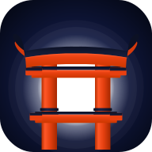

| When | Action |
|---|---|
| Now (Apr) | Book Shinkansen Odawara → Kyoto (May 30, 1:15 PM) via SmartEX — 5 seats |
| Apr 28 | Book Romancecar Shinjuku → Hakone-Yumoto (May 29, 11:00 AM) via Odakyu e-Romancecar — 5 seats together |
| ~May 1–3 | Book teamLab Planets timed entry (May 27) if wanted |
| May 29 | ✓ HARUKA Tennoji → KIX (Jun 5, 12:47 PM) booked via Klook — ref YMB549238 |